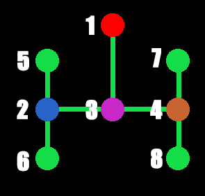

... Pacman Code ...
... Pacman Code ...
Section 17: Defining the Ghost's Start
Setup
We're almost finished with Phase I! That's exciting. Just a couple more sections to go. In this section we are going to give the ghost's their own starting positions. Right now, if you play our game, the ghosts all start on the same node. They basically just start on top of each other. There's nothing wrong with this and we could just leave it as it is. But, then what would have been the point of creating all of those extra home nodes?
The image on the right shows the home nodes with the four ghosts in their starting positions.
- Blinky starts on node 1
- Inky starts on node 2
- Pinky starts on node 3
- Clyde starts on node 4


In the first two images we see Inky moving UP and DOWN. He continues to move UP and DOWN until he is allowed to leave. When he is allowed to leave we give him direct instructions on which directions he must follow in order to leave the home. When he reaches his home node he must go RIGHT, then UP, then LEFT. Clyde has the same behavior, except just on the other side. When Clyde has to leave home he follows the instructions of LEFT, UP, LEFT. We'll refer to these images when we get to the code below.
Modify the ghosts.py file
Modify the Ghost class
Modify the __init__ method
We are going to add a homeNode variable and a startDirection variable. We also remove the call to the setStartPosition method since we'll have each ghost call it in their classes instead.
self.homeNode = None
self.startDirection = UP
Create a new method called getStartNode
All this method does is return the Node version of the position in the MAZEDATA dictionary.
def getStartNode(self):
node = MAZEDATA[self.level]["start"]["ghost"]
return self.nodes.getNode(*node, nodeList=self.nodes.homeList)
Modify the setStartPosition method
We will define the setHomeNode method for each ghost individually.
def setStartPosition(self):
self.setHomeNode()
self.direction = self.startDirection
self.target = self.node.neighbors[self.direction]
self.setPosition()
Modify the Pinky class
def __init(self, nodes, level):
...
self.setStartPosition()
Modify the Blinky class
def __init(self, nodes, level):
...
self.startDirection = LEFT
self.setStartPosition()
Modify the Inky, Clyde classes
def __init(self, nodes, level):
...
self.startDirection = DOWN
self.setStartPosition()
Modify the Blinky class
Create a new method called setHomeNode
def setHomeNode(self):
node = self.getStartNode()
self.homeNode = node
self.node = self.homeNode.neighbors[UP]
Modify the Pinky class
Create a new method called setHomeNode
def setHomeNode(self):
node = self.getStartNode()
self.homeNode = node
self.node = node
Modify the Inky class
Create a new method called setHomeNode
def setHomeNode(self):
node = self.getStartNode()
self.homeNode = node.neighbors[LEFT]
self.node = node.neighbors[LEFT]
Modify the Clyde class
Create a new method called setHomeNode
def setHomeNode(self):
node = self.getStartNode()
self.homeNode = node.neighbors[RIGHT]
self.node = node.neighbors[RIGHT]
So now we have the ghosts all starting on their own nodes. We now have to keep Inky and Clyde inside of the home until we are ready for them to leave. Not only do we have to keep them in there, but while in the home thy can only move UP and DOWN. They can't move LEFT and RIGHT. This should be easy enough right? We just remove the LEFT and RIGHT directions from their validDirections list while they are in the home.
Modify the ghosts.py file
Modify the Ghost class
Modify the __init__ method
We will make a new variable and set it to True as the default. This will initially be False in the Inky and Clyde classes. In fact, go ahead and add it to their classes
...
self.exitHome = True
Modify the getValidDirections method
If the ghost is not allowed to leave the home yet, then we remove the LEFT and RIGHT directions. This will only work for Inky and Clyde, but they are the only two who need to stay inside the home until we tell them to leave.
...
if not self.exitHome:
if LEFT in validDirections:
validDirections.remove(LEFT)
if RIGHT in validDirections:
validDirections.remove(RIGHT)
Now we have Inky and Clyde bouncing UP and DOWN inside of the home area. They will continue to do this until we tell them that it is time to leave. How do we know whether it is time for them to leave? There are a couple of ways we are going to determine that. The main way we'll determine when they can leave is by how many pellets Pacman has eaten. Inky can leave when Pacman eats 30 pellets, and Clyde can leave when Pacman has eaten 60 pellets. We don't want this to be the only control though since the player could just not eat any pellets for awhile and keep Inky and Clyde in the home for a really long time. I mean, they wouldn't be able to finish the level, but we want to check the idleTimer variable and force Inky and Clyde out of the home after 10 seconds of inactivity. That'll be easy since we've already implemented an idleTimer.
Modify the gamecontrol.py file
Modify the checkGhostEvents method
We check to see how many pellets Pacman has eaten.
def checkGhostEvents(self, dt):
...
if self.ghost is not None:
...
if self.pellets.numEaten >= 30 or self.idleTimer >= 10:
self.ghosts.release("inky")
if self.pellets.numEaten >= 60 or self.idleTimer >= 10:
self.ghosts.release("clyde")
Modify the ghosts.py file
Modify the GhostGroup class
Create a new method called release
We release the ghost by setting it's exitHome variable to True.
def release(self, name):
ghost = self.getGhost(name)
if ghost is not None:
ghost.exitHome = True
Guiding the Ghosts out of their Home
I hope that you've been playing the game with every change that we make, and not just typing stuff in blindly. If you did happen to run the code up to this point, then you'll notice that Inky and Clyde bounce UP and DOWN inside the ghost home until the conditions that we specified are met. If those conditions are met then they leave the home. But depending on where Pacman is at the time you'll notice that it takes them some time to find the exit. We need to actually guide them out of the home before we release them into the wild. Like I mentioned at the very beginning of this section with the images, we need to give them specific directions on how to leave the home before they're allowed to make their own decisions on where to go. We only need to do this for Inky and Clyde as well. That's because Blinky doesn't start inside of the home, and Pinky immediately exits the home.
What we have so far is that we start the game with the exitHome variable, that every Ghost has, set to False for Inky and Clyde and True for Blinky and Pinky. What this does is it removes the LEFT and RIGHT directions from their validDirections. This restricts them to only moving UP and DOWN. When certain conditions are met, whatever they may be, we set the exitHome variable to True. Now they are allowed to move LEFT and RIGHT.
In order to guide them out we can use another variable called guideDog or something that is usually False. However, when we release Inky and Clyde we set it to True. While this variable is True we clear out their validDirections list and instead put in the only direction we want them to go. We can do that with a Stack or a Queue, but we'll use a Stack since we have one written up, and it's been awhile since we've used it. So Inky, for example, will have three directions in this Stack: [RIGHT, UP, LEFT]. We pop off each direction and set it in his validDirections list until the stack is empty, at which point we set the guideDog variable to False. Thereafter, Inky will continue on his merry way of trying to kill Pacman. So now that we have an understanding of what we want to do, let's get it coded up.
Modify the ghosts.py file
Modify the Ghost class
Modify the __init__ method
We're going to add three variables that will help us with this problem. Why do we need three variables? Well, the guideDog will tell the ghosts that they need to be guided out of the home. This will always be False for Blinky and Pinky. It's initially False for Inky and Clyde, but we'll set it to True when it is time to guide them out. The exitHome retains the same meaning it had before. We set it to True when we're ready for Inky and Clyde to leave. The default is True so we'll need to set it to False for Inky and Clyde. The leftHome is there to let the ghosts know that they have left their home.
...
self.guideDog = False
self.leftHome = True
Modify the Inky and Clyde classes
Modify the __init__ method
Inky and Clyde's variables are initialy False and we also need to set up their Stacks that will guide them out of the home. We'll define that next.
...
self.setGuideStack()
self.leftHome = False
Modify the Inky class
Create a new method called setGuideStack
We create the stack by pushing the three directions we want Inky to move in that will allow him to leave the home. We want him to go RIGHT, UP, LEFT. We push the RIGHT direction last because that will be the first one we pop off. Remember we're using a Stack.
def setGuideStack(self):
self.guideStack = Stack()
self.guideStack.push(LEFT)
self.guideStack.push(UP)
self.guideStack.push(RIGHT)
Modify the Clyde class
Create a new method called setGuideStack
This is the same as Inky's method except that we want Clyde to move LEFT, UP, LEFT when he leaves the home.
def setGuideStack(self):
self.guideStack = Stack()
self.guideStack.push(LEFT)
self.guideStack.push(UP)
self.guideStack.push(LEFT)
Modify the Ghost class
Create a new method called trapInHome
This isn't new code. We just moved this bit out of the getValidDirections method and put it into it's own method.
def trapInHome(self, validDirections):
if LEFT in validDirections:
validDirections.remove(LEFT)
if RIGHT in validDirections:
validDirections.remove(RIGHT)
return validDirections
Create a new method called guideOutOfHome
We call this method when it is time for the ghost to exit the home. We first check to see if guideDog is True or False. It will initially be False so we wait until the ghost is on the homeNode that we defined earlier. We need to wait until he is on that node before we start giving him specific instructions. When he is on that node, we set the guideDog to True and then give him his first direction by clearing out the validDirections and popping off the first direction from the stack. Afterwards, everytime he overshoots a node, we pop off the next direction from the stack. Everytime we pop off a direction we check to see if the stack is empty. If it is empty then we can set guideDog to False and leftHome to True.
def guideOutOfHome(self, validDirections):
if not self.guideDog:
if self.target == self.homeNode:
self.guideDog = True
validDirections = []
validDirections.append(self.guideStack.pop())
else:
validDirections = []
validDirections.append(self.guideStack.pop())
if self.guideStack.isEmpty():
self.guideDog = False
self.leftHome = True
return validDirections
Modify the getValidDirections method
This allows us to call the two methods we just created. Any ghost that has already left their home will ignore this bit as it should. When the ghost isn't ready to leave the home then we keep him trapped in the home. If he is ready to leave home, then we guide hime out of the home.
def getValidDirections(self):
...
if not self.leftHome:
if self.exitHome:
validDirections = self.guideOutOfHome(validDirections)
else:
validDirections = self.trapInHome(validDirections)
Guiding the Other Ghosts
The only other time we need to guide the ghosts out of the home is when they need to respawn after Pacman eats them. So, this needs to apply to all of the ghosts.
Modify the Ghost class
Create a new method called setGuideStack
We already set the guide stacks for Inky and Clyde, but now we need to set up the method for Blinky and Pinky. The reason is because when they need to respawn, they go back home to do that. When they get there they need strict instructions on how to leave the home. We didn't need it before because they start the game leaving the home as opposed to Inky and Clyde.
def setGuideStack(self):
self.guideStack = Stack()
self.guideStack.push(LEFT)
self.guideStack.push(UP)
Modify the setRespawnMode
When the ghost needs to respawn we need to set up the guideStack and set the leftHome to False. So when the ghost reaches his homeNode he'll follow the directions from the guideStack to quickly leave the home like we described above for Inky and Clyde.
def setRespawnMode(self):
...
self.setGuideStack()
self.leftHome = False
Modify the setSpawnGoal
Before we had the spawn goal hard-coded in, but now we'll just set it as each ghost's homeNode.
def setSpawnGoal(self):
self.goal = self.homeNode.position
Conclusion
So that was a big section, probably the biggest. Maybe I should break it down into smaller sections, but we'll see. In the next section we'll deal with any loose ends that we need to tie up before we finish with this phase. They are minor things, but they can make a difference in how the game is played.
File Structure
- Pacman
- constants.py
- entities.py
- fruit.py
- gamecontrol.py
- ghosts.py
- home.txt
- maze1.txt
- nodes.py
- pacman.py
- pellets.py
- stacks.py
- vectors.py